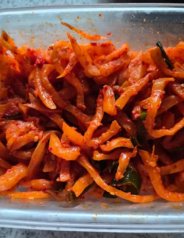
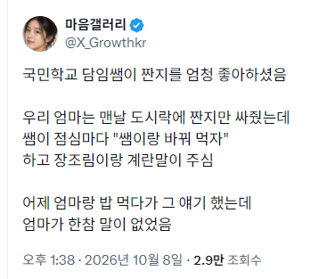

???: 헤헤 짠지마이쪙~
악 짠지가 좋아 선생님이었던것
왐마 이집 짠지 맛집이네
???: 이히히 짠지좋아
참 저런 낭만이 맛있긴 해
딸을 위해 정성껏 준비한 짠지를 생판 모르는 선생님이 뺏어가니 얼마나 마음이 아프겠우
장조림좋잖아 왜
...흠...
선생님이 학생이 맨날 짠지만 싸오니까 신경 써준거고
엄마는 그거 듣고 미안하고 감사해서 말이 없어진거고
애가 맨날 짠지만 싸오니 딱해보여서 반찬 바꾼거
문해력 떡밥에 낄 자격을 박탈함
??? : 그걸 빼먹네
동심이 다치지 않게...저런 센스 있는 배려 배우고 싶다
대가를 바라지 않는 선, 생색내지 않는 친절 이게 참 어려움
센스도 센스인데 관찰력도 고트
참스승 ㅜㅜ
국민학교...?
초등학교 도시락 싸고 다닐때면 국민학교 맞지 않나?
01년에 도시락 먹었음 ㅋㅋ
지역마다 다른가..? 우린 급식이었는디
급식이 정상이지. 뭔 도시락이야
초등학생때?
어느지역이였음??
짠지가짠지안짠지먹어보도록

촌지선생들만 듣다가 짠지선생 들으니 훈훈하다
내 손맛이 이정도구나 으쓱으쓱
선생님은 장조림이 싫다고 하셨어
선생님은 장조림이 싫다고 하셨어
너 그게 어떤 짠지인 줄 아니!!!
얼굴이 발그래해지는 어머니
짬지 ㅇㄷ?
저런 선생님도 계시지 사람으로 키우고 언젠가 세상 버리셔도 평생 제자의 마음에 남고
선생 이 짠지 도둑놈이..! 크흡!
그때 그 짠지를 좋아하던 선생님이 이젠 제 짬지가 됐네요 허허
짠지 수탈
나 김개붕을 울리지 마라
파란딱지
엄마 : 우물우물
? : 짠지 달라고.
사랑방 선샌니와 어머니
국민학교 시절이라면 ㅜㅜ
아아...그저 참 선생님...ㅠㅠ
옛날엔 개같은 선생들도 많았지만 학생한테 개입이 쉬운만큼 좋은 선생님들도 있었지
ㅜㅜㅜㅜㅜ